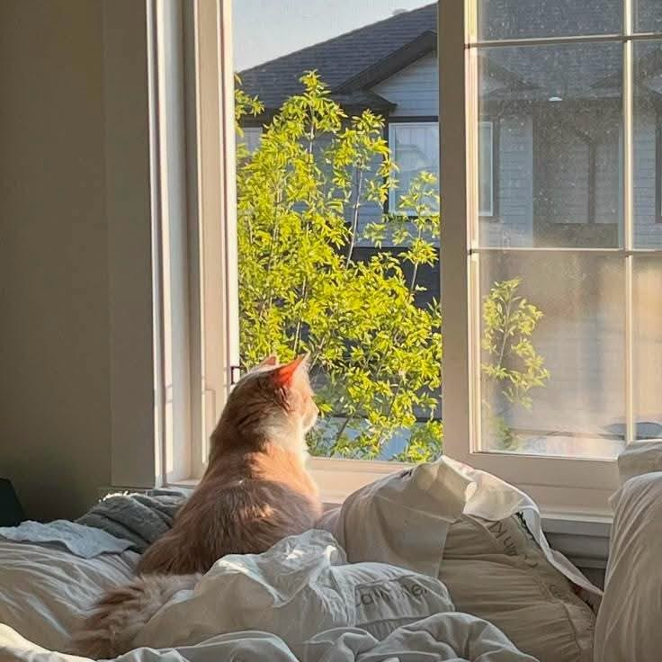

I used to wake up already behind. The phone was in my hand before my eyes were open. The slow morning began as a small rebellion against that habit.
Mine is simple: open the curtains, stand in the light for a minute, drink a glass of water, then hold something warm. The phone stays in another room.
If twenty minutes feels impossible, start with five. Some mornings will fall apart, and that is fine. The ritual is a door you can walk through again tomorrow.